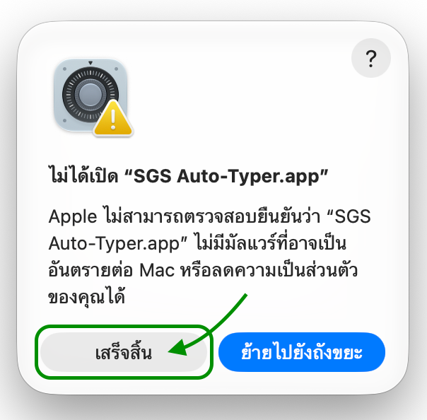
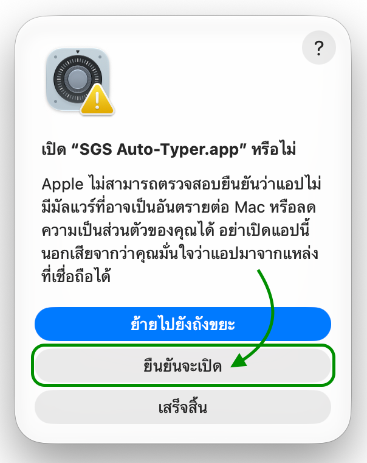
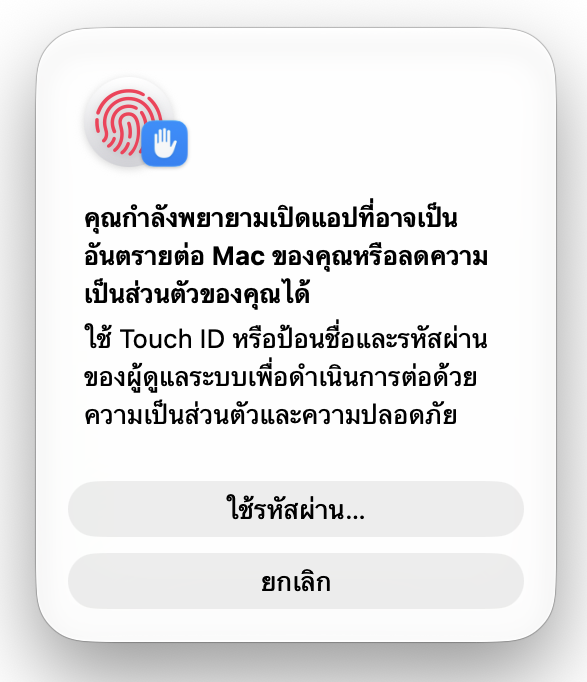
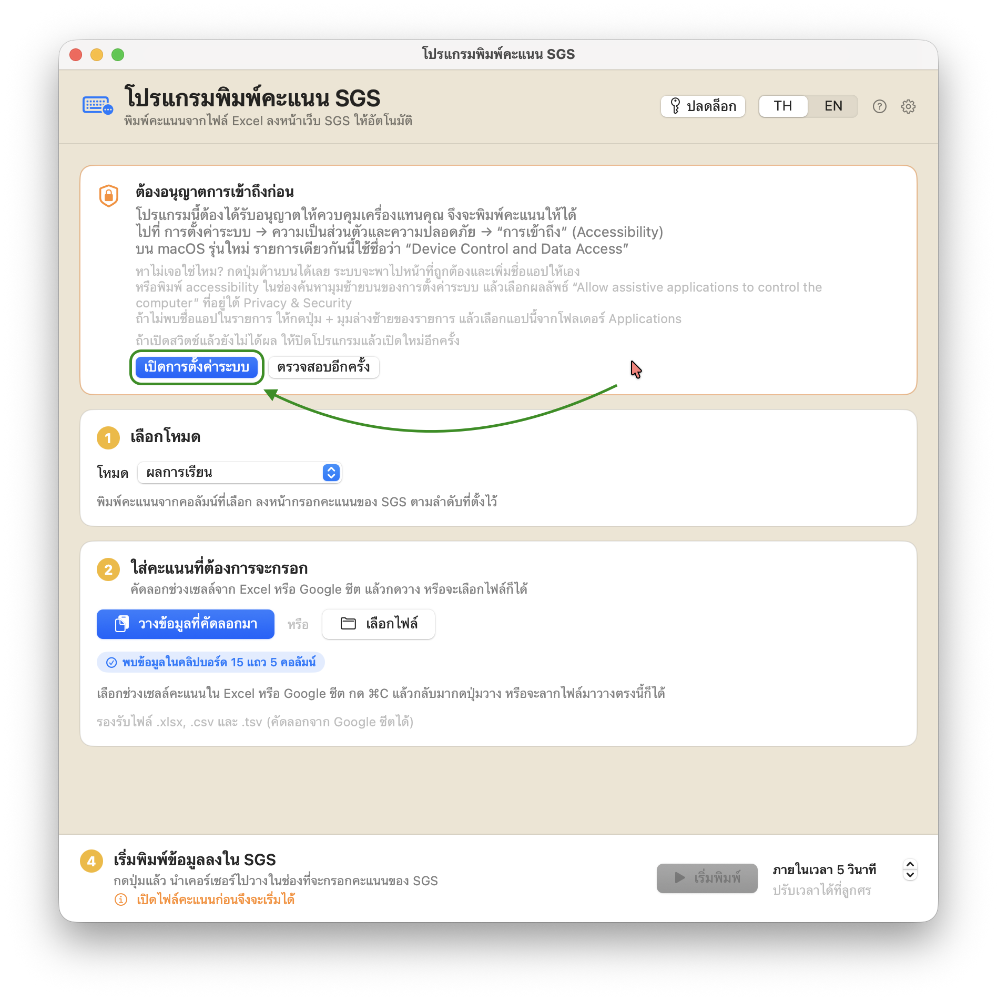
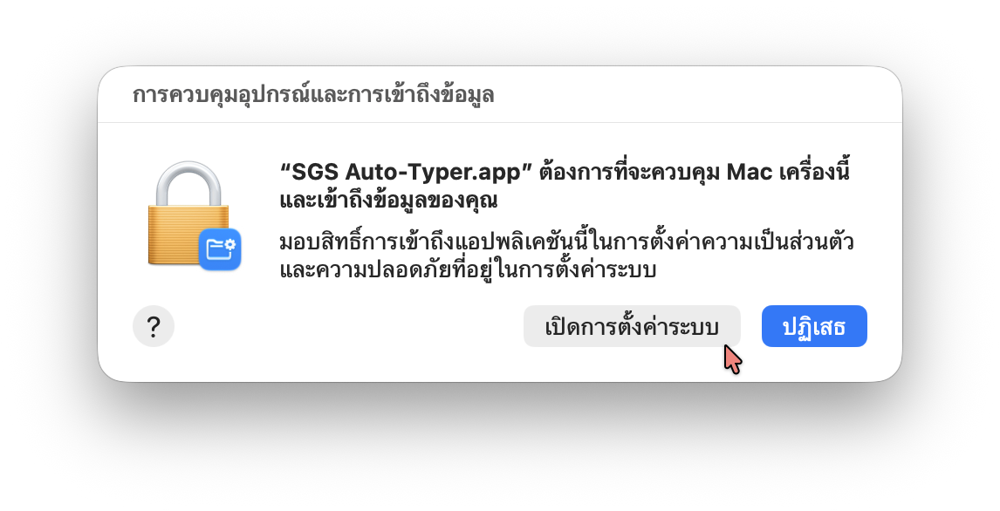

ติดตั้ง
ทำครั้งเดียวตอนเริ่มใช้
ขั้นตอนพวกนี้เป็นเรื่องปกติของโปรแกรมที่ไม่ได้ซื้อใบรับรองผู้พัฒนา
ทำครั้งเดียวแล้วครั้งต่อไปเปิดใช้ได้ตามปกติ
1
แตกไฟล์แล้วเปิดได้เลย
คลิกขวาที่ไฟล์ .zip ที่ดาวน์โหลดมา เลือก Extract All
แล้วเปิด SGS-Auto-Typer.exe ในโฟลเดอร์ที่ได้
เก็บทั้งโฟลเดอร์ไว้ด้วยกัน อย่าย้ายเฉพาะไฟล์ .exe ออกมา
2
ผ่านคำเตือนของ Windows
ครั้งแรกอาจขึ้นหน้าจอสีน้ำเงิน “Windows protected your PC”
ให้กด More info แล้วกด Run anyway
ขึ้นเพราะยังไม่ได้ซื้อใบรับรองผู้พัฒนา ไม่ได้แปลว่าไฟล์มีปัญหา
บน Windows ไม่ต้องเปิดสิทธิ์อะไรเพิ่ม — โปรแกรมพิมพ์ให้ได้ทันทีที่เปิด
ต่างจากบน Mac ที่ต้องเปิดสิทธิ์ Accessibility ก่อนหนึ่งครั้ง
ก่อนอื่น แตกไฟล์ .zip ที่ดาวน์โหลดมา แล้วลาก
SGS Auto-Typer.app ไปไว้ในโฟลเดอร์
แอปพลิเคชัน (Applications) ก่อนเสมอ
เพราะแอปที่ยังอยู่ในโฟลเดอร์ดาวน์โหลดจะถูกบล็อกซ้ำทุกครั้งที่เปิด จากนั้นทำตามภาพทีละขั้น
ภาพทุกภาพมาจาก macOS ภาษาไทย ปุ่มที่ต้องกดวงไว้ด้วยกรอบสีเขียว
กดที่ภาพเพื่อดูขนาดเต็ม ชื่อปุ่มภาษาอังกฤษอยู่ในวงเล็บ เผื่อเครื่องของคุณครูตั้งเป็นภาษาอังกฤษ
1
เปิดครั้งแรก แล้วกด เสร็จสิ้น
ดับเบิลคลิกที่แอป จะขึ้นกล่องข้อความว่า ไม่ได้เปิด “SGS Auto-Typer.app”
ให้กด เสร็จสิ้น (Done)
กล่องนี้ขึ้นเพราะแอปยังไม่ได้ซื้อใบรับรองผู้พัฒนาจาก Apple ไม่ได้แปลว่าไฟล์มีปัญหา
อย่ากดปุ่มสีฟ้า ย้ายไปยังถังขยะ (Move to Trash)

2
เปิดการตั้งค่าระบบ แล้วกด ยืนยันจะเปิด
ไปที่ การตั้งค่าระบบ (System Settings) →
ความเป็นส่วนตัวและความปลอดภัย (Privacy & Security)
เลื่อนลงไปที่หัวข้อ ความปลอดภัย (Security)
จะเห็นบรรทัดว่า “SGS Auto-Typer.app” ถูกปิดกั้นเพื่อปกป้อง Mac ของคุณ
ให้กดปุ่ม ยืนยันจะเปิด (Open Anyway) ที่ท้ายบรรทัด
3
ยืนยันอีกครั้ง
จะมีกล่องถามซ้ำว่า เปิด “SGS Auto-Typer.app” หรือไม่
ให้กด ยืนยันจะเปิด (Open Anyway) ซึ่งเป็นปุ่มกลาง
ปุ่มสีฟ้าด้านบนคือ ย้ายไปยังถังขยะ (Move to Trash) อย่ากดปุ่มนั้น

4
ใส่รหัสผ่านหรือใช้ Touch ID
macOS จะขอให้ยืนยันตัวตนด้วย Touch ID
หรือกด ใช้รหัสผ่าน… (Use Password…) แล้วพิมพ์รหัสผ่านเครื่อง
ต้องเป็นรหัสของผู้ดูแลระบบเครื่องนั้น หลังจากขั้นนี้แอปจะเปิดขึ้นมา
และครั้งต่อ ๆ ไปจะเปิดได้เลยโดยไม่ต้องทำขั้นที่ 1 ถึง 4 อีก

5
ในแอป กด เปิดการตั้งค่าระบบ
แอปจะขึ้นกรอบสีส้มด้านบนว่า ต้องอนุญาตการเข้าถึงก่อน
เพราะยังไม่ได้รับอนุญาตให้ควบคุมเครื่องแทนคุณครู จึงยังพิมพ์คะแนนให้ไม่ได้
ให้กดปุ่มสีฟ้า เปิดการตั้งค่าระบบ (Open System Settings) ในกรอบนั้น
แอปจะพาไปหน้าที่ถูกต้องและเพิ่มชื่อตัวเองให้เอง

6
กด เปิดการตั้งค่าระบบ ในกล่องที่ขึ้นมา
macOS จะถามซ้ำในกล่องชื่อ การควบคุมอุปกรณ์และการเข้าถึงข้อมูล
ว่า “SGS Auto-Typer.app” ต้องการที่จะควบคุม Mac เครื่องนี้และเข้าถึงข้อมูลของคุณ
ให้กด เปิดการตั้งค่าระบบ (Open System Settings)
ไม่ใช่ปุ่มสีฟ้า ปฏิเสธ (Deny)

7
เปิดสวิตช์หน้าชื่อแอป
ในรายการ การควบคุมอุปกรณ์และการเข้าถึงข้อมูล
(Device Control and Data Access)
เลื่อนหา SGS Auto-Typer.app แล้วเปิดสวิตช์ให้เป็นสีฟ้า
ถ้าไม่พบชื่อแอปในรายการ กดปุ่ม + มุมล่างซ้าย
แล้วเลือกแอปจากโฟลเดอร์ Applications
เสร็จแล้วหน้าตาจะเป็นแบบนี้ กรอบสีส้มหายไป เหลือแค่สี่ขั้นตอนการใช้งาน
ถ้ากรอบยังอยู่ทั้งที่เปิดสวิตช์แล้ว ให้ปิดโปรแกรมแล้วเปิดใหม่อีกครั้ง
บน macOS รุ่นเก่ากว่านี้ หน้าตาจะต่างไปบ้าง
บน macOS 13–14 ให้คลิกขวาที่ไอคอนแอปแล้วเลือก เปิด (Open) แล้วกด เปิด (Open) อีกครั้ง
แทนขั้นที่ 1 ถึง 4 และรายการสิทธิ์ในขั้นที่ 7 จะใช้ชื่อว่า
การเข้าถึง (Accessibility) แทน
ถ้าหาไม่เจอ ให้พิมพ์ accessibility ในช่องค้นหามุมซ้ายบนของการตั้งค่าระบบ
แล้วเลือกผลลัพธ์ “Allow assistive applications to control the computer”
ที่มีคำว่า Privacy & Security อยู่ใต้ชื่อ —
ระวังสับสนกับหมวดตั้งค่าใหญ่ชื่อ การเข้าถึง (Accessibility)
ที่มี VoiceOver ซูม และขนาดตัวอักษร ซึ่งเป็นคนละอันกัน
และทุกครั้งที่ดาวน์โหลดแอปเวอร์ชันใหม่ อาจต้องเปิดสวิตช์นี้ใหม่อีกครั้ง